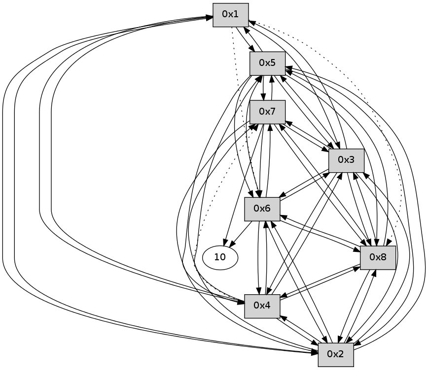

>> << IDX [start] -100 -25 -5 +0 +5 +25 +100 [160.114109993]
 Previous packets
----------------------------------------------------------------------
155.385288 beacon01(11f6) #0 coord=01,02,03,04,05,06,07,08,0a,09 cycle=688.0ms assoc
-- color-indic=0 64 97 36
155.395439 beacon02(11f6) #0 coord=01,02,03,04,05,06,07,08,0a,09 cycle=688.0ms assoc 64 04 07
155.405424 beacon03(11f6) #0 coord=01,02,03,04,05,06,07,08,0a,09 cycle=688.0ms assoc 64 7e 4a
155.415423 beacon04(11f6) #0 coord=01,02,03,04,05,06,07,08,0a,09 cycle=688.0ms assoc 64 09 a0
155.425424 beacon05(11f6) #0 coord=01,02,03,04,05,06,07,08,0a,09 cycle=688.0ms assoc 64 73 ed
155.445424 beacon07(11f6) #0 coord=01,02,03,04,05,06,07,08,0a,09 cycle=688.0ms assoc 64 87 77
155.455428 beacon08(11f6) #0 coord=01,02,03,04,05,06,07,08,0a,09 cycle=688.0ms assoc 64 02 e6
155.490752 [Hello(1): seq=46 sym=5,3,2,4 asym=8 sysInfo= stat=5:11,0,0,0/3:13,0,0,0/2:9,0,0,0/4:10,0,0,0/8:13,0,0,0]
----------------------------------------------------------------------
156.173428 beacon01(11f6) #0 coord=01,02,03,04,05,06,07,08,0a,09 cycle=688.0ms assoc
-- color-indic=0 64 53 38
156.183599 beacon02(11f6) #0 coord=01,02,03,04,05,06,07,08,0a,09 cycle=688.0ms assoc 64 c0 09
156.193564 beacon03(11f6) #0 coord=01,02,03,04,05,06,07,08,0a,09 cycle=688.0ms assoc 64 ba 44
156.203563 beacon04(11f6) #0 coord=01,02,03,04,05,06,07,08,0a,09 cycle=688.0ms assoc 64 cd ae
156.213563 beacon05(11f6) #0 coord=01,02,03,04,05,06,07,08,0a,09 cycle=688.0ms assoc 64 b7 e3
156.243568 beacon08(11f6) #0 coord=01,02,03,04,05,06,07,08,0a,09 cycle=688.0ms assoc 64 c6 e8
156.294427 [Hello(2): seq=46 sym=1,7,5,3,8,4,6 sysInfo= stat=1:13,0,0,0/7:7,0,0,0/5:11,0,0,0/3:12,0,0,0/8:12,0,0,0/4:10,0,0,0/6:9,0,0,0]
156.311736 [Hello(3): seq=46 sym=1,2,7,5,6,8,4 sysInfo= stat=1:14,0,0,0/2:11,0,0,0/7:7,0,0,0/5:11,0,0,0/6:11,0,0,0/8:12,0,0,0/4:12,0,0,0]
156.318190 [Hello(6): seq=46 sym=10,7,5,3,8,4,2 sysInfo= stat=10:4,0,0,0/7:7,0,0,0/5:7,0,0,0/3:12,0,0,0/8:12,0,0,0/4:5,0,0,0/2:12,0,0,0]
156.389173 [Hello(4): seq=46 sym=1,2,5,6,3,8 asym=7 sysInfo= stat=1:13,0,0,0/2:12,0,0,0/5:11,0,0,0/6:11,0,0,0/3:14,0,0,0/8:11,0,0,0/7:15,0,0,0]
156.406823 [Hello(5): seq=46 sym=1,2,7,6,3,8,4 sysInfo= stat=1:14,0,0,0/2:11,0,0,0/7:7,0,0,0/6:12,0,0,0/3:13,0,0,0/8:12,0,0,0/4:12,0,0,0]
156.414352 [Hello(8): seq=46 sym=2,7,5,6,3,4 sysInfo= stat=2:9,0,0,0/7:8,0,0,0/5:11,0,0,0/6:14,0,0,0/3:11,0,0,0/4:11,0,0,0]
156.426058 [Hello(7): seq=46 sym=10,5,6,8,3,2 sysInfo= stat=10:7,0,0,0/5:11,0,0,0/6:14,0,0,0/8:14,0,0,0/3:12,0,0,0/2:8,0,0,0]
----------------------------------------------------------------------
156.961564 beacon01(11f6) #0 coord=01,02,03,04,05,06,07,08,0a,09 cycle=688.0ms assoc
-- color-indic=0 64 ef 3d
156.971737 beacon02(11f6) #0 coord=01,02,03,04,05,06,07,08,0a,09 cycle=688.0ms assoc 64 7c 0c
156.981698 beacon03(11f6) #0 coord=01,02,03,04,05,06,07,08,0a,09 cycle=688.0ms assoc 64 06 41
156.991699 beacon04(11f6) #0 coord=01,02,03,04,05,06,07,08,0a,09 cycle=688.0ms assoc 64 71 ab
157.001700 beacon05(11f6) #0 coord=01,02,03,04,05,06,07,08,0a,09 cycle=688.0ms assoc 64 0b e6
157.021699 beacon07(11f6) #0 coord=01,02,03,04,05,06,07,08,0a,09 cycle=688.0ms assoc 64 ff 7c
157.031705 beacon08(11f6) #0 coord=01,02,03,04,05,06,07,08,0a,09 cycle=688.0ms assoc 64 7a ed
157.079698 [Hello(1): seq=47 sym=5,3,2,4 asym=8 sysInfo= stat=5:12,0,0,0/3:14,0,0,0/2:10,0,0,0/4:11,0,0,0/8:14,0,0,0]
----------------------------------------------------------------------
157.749700 beacon01(11f6) #0 coord=01,02,03,04,05,06,07,08,0a,09 cycle=688.0ms assoc
-- color-indic=0 64 fb 53
157.759875 beacon02(11f6) #0 coord=01,02,03,04,05,06,07,08,0a,09 cycle=688.0ms assoc 64 68 62
157.769835 beacon03(11f6) #0 coord=01,02,03,04,05,06,07,08,0a,09 cycle=688.0ms assoc 64 12 2f
157.779834 beacon04(11f6) #0 coord=01,02,03,04,05,06,07,08,0a,09 cycle=688.0ms assoc 64 65 c5
157.789836 beacon05(11f6) #0 coord=01,02,03,04,05,06,07,08,0a,09 cycle=688.0ms assoc 64 1f 88
157.809836 beacon07(11f6) #0 coord=01,02,03,04,05,06,07,08,0a,09 cycle=688.0ms assoc 64 eb 12
157.819840 beacon08(11f6) #0 coord=01,02,03,04,05,06,07,08,0a,09 cycle=688.0ms assoc 64 6e 83
157.861644 [Hello(8): seq=47 sym=2,7,5,6,3,4 sysInfo= stat=2:9,0,0,0/7:9,0,0,0/5:11,0,0,0/6:14,0,0,0/3:11,0,0,0/4:11,0,0,0]
157.879430 [Hello(6): seq=47 sym=10,7,5,3,8,4,2 sysInfo= stat=10:5,0,0,0/7:8,0,0,0/5:7,0,0,0/3:12,0,0,0/8:14,0,0,0/4:6,0,0,0/2:12,0,0,0]
157.895014 [Hello(4): seq=47 sym=1,2,5,6,3,8 asym=7 sysInfo= stat=1:14,0,0,0/2:12,0,0,0/5:12,0,0,0/6:12,0,0,0/3:14,0,0,0/8:13,0,0,0/7:0,0,0,0]
157.900313 [Hello(7): seq=47 sym=10,5,6,8,3,2 sysInfo= stat=10:7,0,0,0/5:11,0,0,0/6:15,0,0,0/8:15,0,0,0/3:12,0,0,0/2:8,0,0,0]
157.924085 [Hello(2): seq=47 sym=1,7,5,3,8,4,6 sysInfo= stat=1:14,0,0,0/7:9,0,0,0/5:12,0,0,0/3:13,0,0,0/8:14,0,0,0/4:12,0,0,0/6:11,0,0,0]
157.977398 [Hello(3): seq=47 sym=1,2,7,5,6,8,4 sysInfo= stat=1:15,0,0,0/2:12,0,0,0/7:9,0,0,0/5:12,0,0,0/6:13,0,0,0/8:14,0,0,0/4:14,0,0,0]
157.985274 [Hello(5): seq=47 sym=1,2,7,6,3,8,4 sysInfo= stat=1:15,0,0,0/2:12,0,0,0/7:9,0,0,0/6:13,0,0,0/3:14,0,0,0/8:14,0,0,0/4:13,0,0,0]
----------------------------------------------------------------------
158.537838 beacon01(11f6) #0 coord=01,02,03,04,05,06,07,08,0a,09 cycle=688.0ms assoc
-- color-indic=0 64 47 56
158.548009 beacon02(11f6) #0 coord=01,02,03,04,05,06,07,08,0a,09 cycle=688.0ms assoc 64 d4 67
158.557973 beacon03(11f6) #0 coord=01,02,03,04,05,06,07,08,0a,09 cycle=688.0ms assoc 64 ae 2a
158.567972 beacon04(11f6) #0 coord=01,02,03,04,05,06,07,08,0a,09 cycle=688.0ms assoc 64 d9 c0
158.577973 beacon05(11f6) #0 coord=01,02,03,04,05,06,07,08,0a,09 cycle=688.0ms assoc 64 a3 8d
158.587973 beacon06(11f6) #0 coord=01,02,03,04,05,06,07,08,0a,09 cycle=688.0ms assoc 64 2d 5a
158.597973 beacon07(11f6) #0 coord=01,02,03,04,05,06,07,08,0a,09 cycle=688.0ms assoc 64 57 17
158.607977 beacon08(11f6) #0 coord=01,02,03,04,05,06,07,08,0a,09 cycle=688.0ms assoc 64 d2 86
158.772362 [Hello(1): seq=48 sym=5,3,2,4 asym=8,6 sysInfo= stat=5:13,0,0,0/3:15,0,0,0/2:11,0,0,0/4:12,0,0,0/8:15,0,0,0/6:0,0,0,0]
----------------------------------------------------------------------
159.325974 beacon01(11f6) #0 coord=01,02,03,04,05,06,07,08,0a,09 cycle=688.0ms assoc
-- color-indic=0 64 83 58
159.336135 beacon02(11f6) #0 coord=01,02,03,04,05,06,07,08,0a,09 cycle=688.0ms assoc 64 10 69
159.346109 beacon03(11f6) #0 coord=01,02,03,04,05,06,07,08,0a,09 cycle=688.0ms assoc 64 6a 24
159.356109 beacon04(11f6) #0 coord=01,02,03,04,05,06,07,08,0a,09 cycle=688.0ms assoc 64 1d ce
159.366110 beacon05(11f6) #0 coord=01,02,03,04,05,06,07,08,0a,09 cycle=688.0ms assoc 64 67 83
159.376110 beacon06(11f6) #0 coord=01,02,03,04,05,06,07,08,0a,09 cycle=688.0ms assoc 64 e9 54
159.386110 beacon07(11f6) #0 coord=01,02,03,04,05,06,07,08,0a,09 cycle=688.0ms assoc 64 93 19
159.396114 beacon08(11f6) #0 coord=01,02,03,04,05,06,07,08,0a,09 cycle=688.0ms assoc 64 16 88
159.461941 [Hello(6): seq=48 sym=10,7,5,3,8,4,2 sysInfo= stat=10:6,0,0,0/7:9,0,0,0/5:7,0,0,0/3:13,0,0,0/8:14,0,0,0/4:7,0,0,0/2:13,0,0,0]
159.488993 [Hello(4): seq=48 sym=1,2,5,6,3,8 asym=7 sysInfo= stat=1:15,0,0,0/2:13,0,0,0/5:13,0,0,0/6:13,0,0,0/3:15,0,0,0/8:13,0,0,0/7:1,0,0,0]
159.529668 [Hello(8): seq=48 sym=2,7,5,6,3,4 sysInfo= stat=2:10,0,0,0/7:10,0,0,0/5:12,0,0,0/6:0,0,0,0/3:12,0,0,0/4:12,0,0,0]
159.534497 [Hello(5): seq=48 sym=1,2,7,6,3,8,4 sysInfo= stat=1:0,0,0,0/2:12,0,0,0/7:9,0,0,0/6:14,0,0,0/3:14,0,0,0/8:14,0,0,0/4:14,0,0,0]
159.543305 [Hello(2): seq=48 sym=1,7,5,3,8,4,6 sysInfo= stat=1:15,0,0,0/7:9,0,0,0/5:14,0,0,0/3:14,0,0,0/8:15,0,0,0/4:13,0,0,0/6:12,0,0,0]
159.562331 [Hello(3): seq=48 sym=1,2,7,5,6,8,4 sysInfo= stat=1:0,0,0,0/2:13,0,0,0/7:9,0,0,0/5:14,0,0,0/6:14,0,0,0/8:15,0,0,0/4:15,0,0,0]